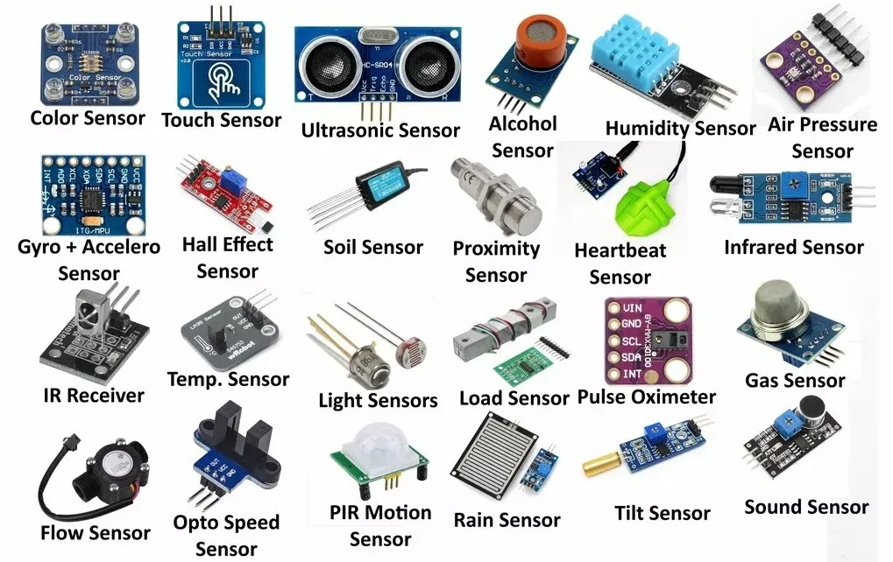
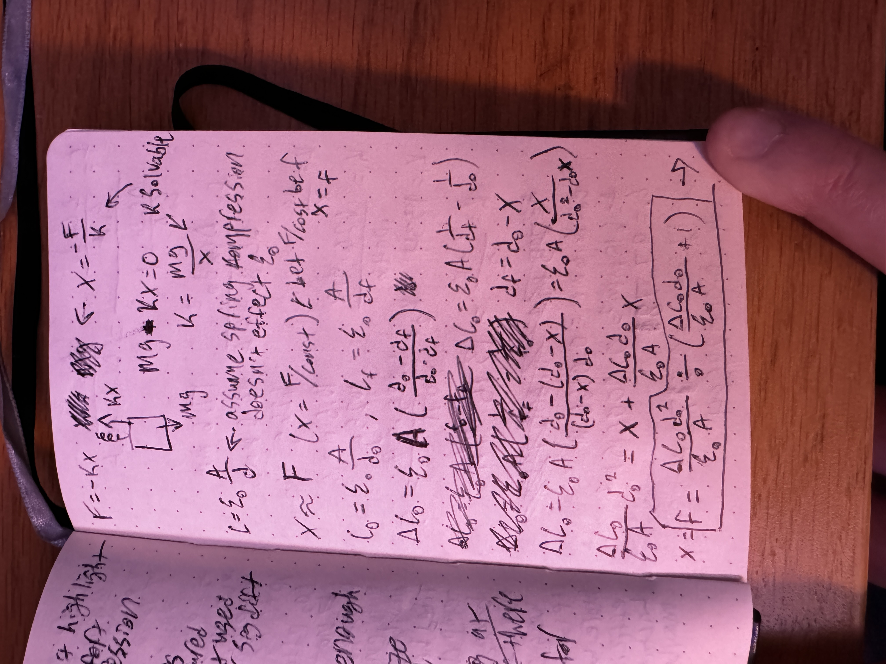
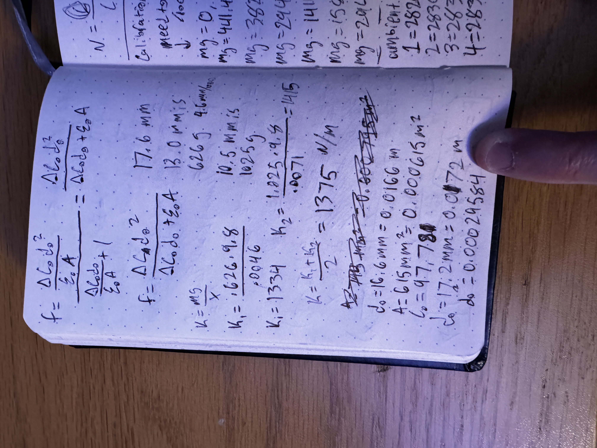
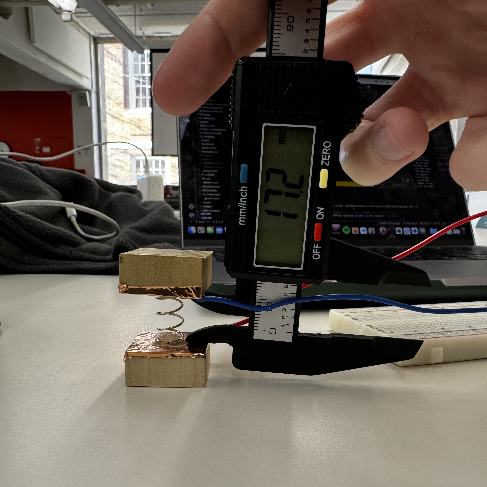
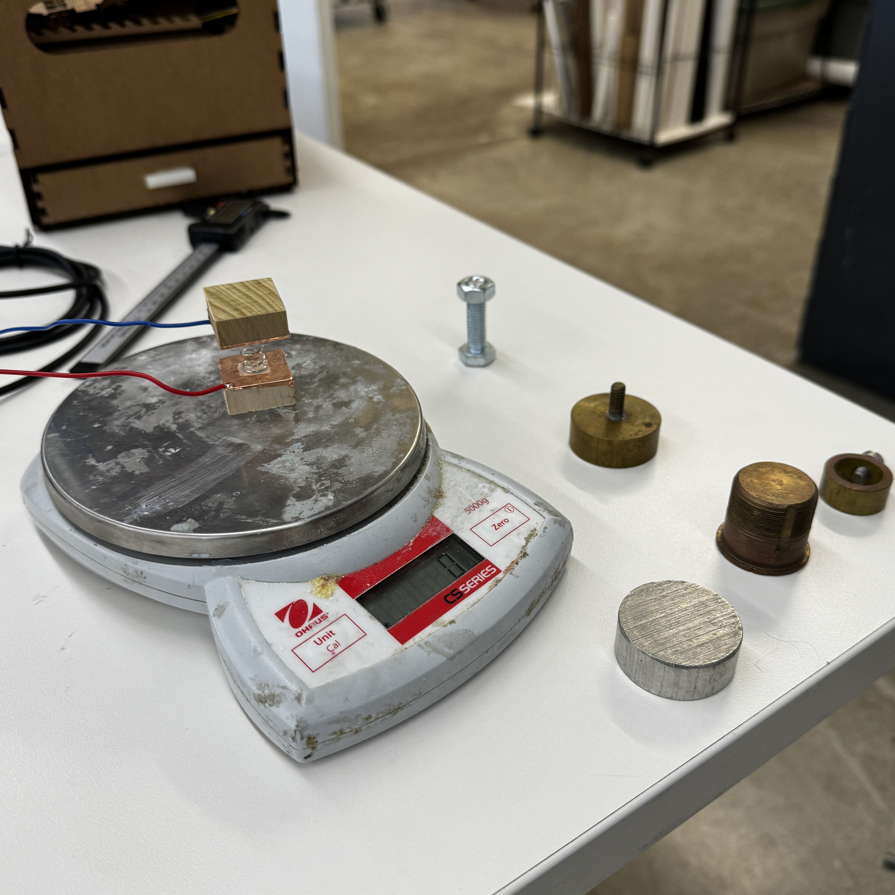
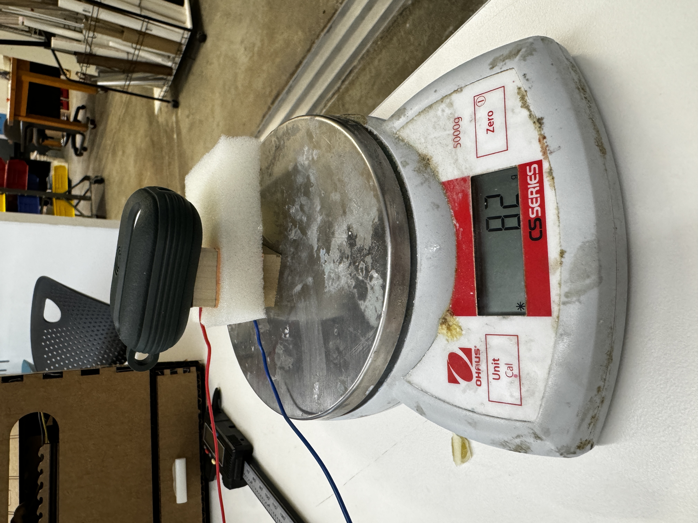
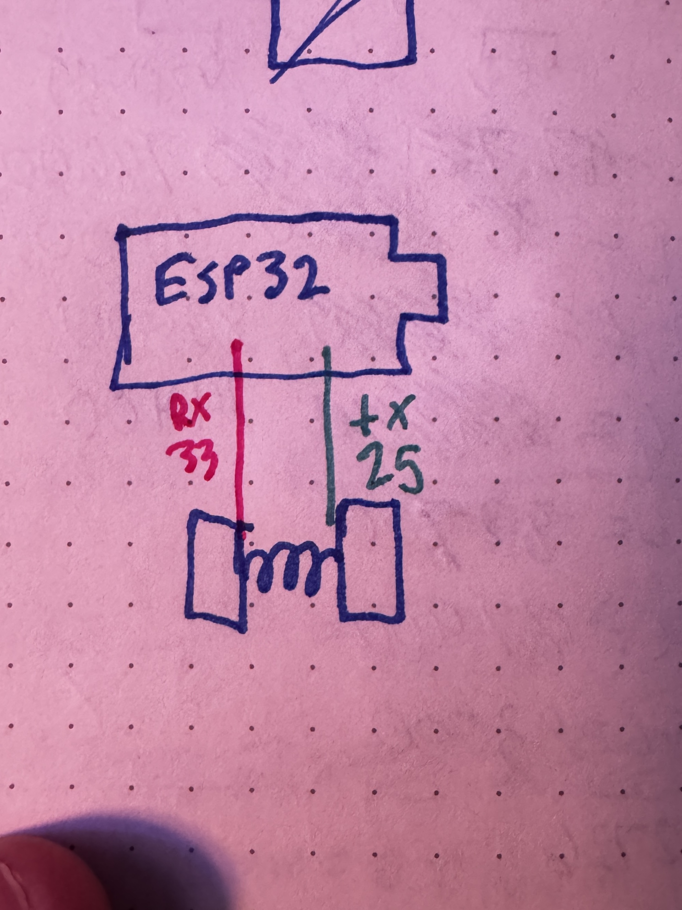

Week 6: Electronic Inputs

Assignment 1: Capacitive Sensor
Man I thought I was gonna do something really cool here. In class, we talked about compression sensors using capacitance, so I thought that it would be cool to make a more formal force sensor using capacitance. Most normal force sensors use an integrated spring to pull some fancy physic kinematics or something like that to calculate the force applied using the spring constant and displacement. I really thought I was gonna cook with this and decided that maybe I could do the same thing! I knew that capacitance also had to do with displacement, just like the spring, so I figured there might be some shenanigans that I could pull to get force in terms of capacitance. Here are all of my chicken scratch notes where I solve for this.


Essentially, I used the equation for capacitance combined with the equation for the force of a spring to get it into this nice(ish), usable form that expresses force as a function of capacitance. I knew that I could find the spring constant, which made this whole thing solvable. After proving to myself that this was solvable, I went about setting up all the necessary components and measuring the required variables. I calculated the spring constant by putting heavy objects of a known mass on top of the spring and measuring the compression of the spring. After doing this for a couple objects, I averaged across the found constants to get the k that I eventually used. After that, I got some copper, cut it into little squares, and adhered them to little scraps of wood that I found in the lab. This gave them a little bit more structural integrity and a better shape for when I later was putting heavy objects on it. I then hot glued the spring onto non-conductive pieces of tape that I placed on the center of the copper pads and created the full force sensor itself. I also soldered some wires onto the copper pads. Initially, I used the code that we had in class to measure the capacitance, but there was too much variation and my sensor was producing a sinusoidal result instead of a clear baseline.
To counteract that, I made it also print out a rolling average to get a clearer picture of what the baseline capacitance was.
// Update rolling average
total = total - readings[readIndex];
readings[readIndex] = result;
total = total + result;
readIndex++;
if (readIndex >= AVERAGE_SIZE) {
readIndex = 0;
arrayFilled = true;
}
// Calculate average
long average;
if (arrayFilled) {
average = total / AVERAGE_SIZE;
} else {
average = total / (readIndex == 0 ? 1 : readIndex);
}
// Print results
Serial.print("Raw: ");
Serial.print(result);
Serial.print(", Avg: ");
Serial.println(average);
Once I got this working, I got really excited and decided that I wanted to start taking some calibration measurements before I even put in the formula that I spent so much time on. I started throwing random heavy things on the spring and measuring the capacitance, as I knew that the force measured should be equivalent to the mass of the object times g (9.8 m/s^2). Here are some pics of that process.


After a few of these, I figured I probably should actually implement my formula that I painstakingly derived, which is when disaster struck. I typed in my formula painfully slowly into Arduino, ensuring that all the parentheses were in the right place. I took the baseline capacitance and all of the other physical properties that I measured and put it into the code and ran it, and...I got some weird results. No matter what, despite the capacitance changing, the force kept reading 23.65 N. I had been very careful with my units, but I figured I should double check them. This is when I realized that my baseline value of 97,881 is likely not measured in Farads... Upon talking with Bobby and Kassia, I realized that my grand dreams were dashed because the value measured by arduino is somewhat arbitrary and not actually something that has well defined units. Because of this, my entire idea is moot. I never considered that I wasn't actually measuring capacitance, and this new revelation made my equation unsolvable. If we had measured capacitance directly, this would've been a sick idea. With dreams dashed, I ripped the spring off the copper pads and stuck a random, lame piece of foam between them instead. I could've continued the process with my spring contraption, but balancing the weights on top of it was a nuisance that I was only willing to put up with if it was going to add a cool aspect to it. With the foam newly between, I went on with putting heavy objects on top and measuring the capacitance. I eventually created the force vs. measured value plot below


Honestly, this graph looks pretty linear, which is surprising to me because the equation that I solved for was very far from linear. I still was struggling to balance the weights a lot of the time and even with the rolling average, things frequently did not reach perfect steady state, so I assume that that is where a large source of the error comes from. Also more samples would help elucidate this relationship further.
Assignment 2: [Use + Calibrate Another Sensor]
Sad that my previous grand ideas didn't work out, I set out with a new, half-baked idea. In rustling through the bins in the lab, I discovered one lone joystick. I love video games and I always am having to calibrate my joysticks when they get a little wonky, and I know they work like potentiometers, so I was like let's see if I can calibrate this joystick! After a little bit of time setting up a circuit, I asked Bobby and Kassia if this would count as a sensor for the assignment. Their response was...lukewarm at best. Kassia rightfully pointed out that this would be very difficult to calibrate outside of a full tilt because it's not easily comparable to real world values. I returned to the drawing board and decided that I wanted to try to a proximity sensor. In retrospect, I don't know why I didn't do a thermistor, since I am literally going to need to calibrate some thermistors for my final project, but hindsight is 20/20 I guess. I set up the proximity sensor using the wiring diagram on the website, repurposed my code from the capacitance sensor including the rolling average, set it going, and...a whole lot of zeroes. Thinking that it may be an interference problem, I made little guards for each of the LEDs from a cut piece of straw wrapped in duct tape that blocked any and all light from the sides, ensuring that the only light reaching the LEDs were bouncing off of stuff. It was at this point that I realized my emitter LED was actually a green LED that I had installed with incorrect polarity and that I was in fact not able to see infrared light. I replaced it with a real IR emitter and still recorded zeroes both with and without the guards. Bobby and I troubleshot this for a while, but I had already been in the lab for ~5 hours at this point and the rough draft of my thesis is due on Friday, so I made one final pivot.
This time, I set up a disappointingly simple photoresistor circuit following the instructions on the website to build the voltage divider circuit. I added my rolling average code to the photoresistor circuit code from the website. Once I uploaded this, I was getting a constant 4095 which must represent the maximum possible value that the pin could interpret because it wouldn't go higher. I threw a 100 kOhm resistor in before the LED and that resulted in me having actual, readable values. There is unfortunately not much to say about this overall, and this is not the project that I am most proud of. I tested it using my phone's flashlight, and I added an LED to go off if the read value is greater than the value read with my phone flashlight at the lowest setting.
The graph of this looks to be a saturating curve, but the x-axis is not to scale, which makes thorough analysis of this difficult. 0 corresponds to the photoresistor being covered completely, 1 is just ambient light, and then 2-5 are the 4 levels of brightness on my phone flashlight. From Adafruit's documentation, "they shouldn't be used to try to determine precise light levels in lux or millicandela. Instead, you can expect to only be able to determine basic light changes." My findings confirm this. There is an obvious difference when there is light vs no light and if there is additional light being shined onto it, but beyond that it gets a little sketchy.
Assignment 3: [CNC Files]
I wasn't super sure what exactly we were supposed to do here, but after talking with Bobby I got a better sense of what the CNC router was good at and what might not be the best idea for a first time project. With that in mind, I found a map of Ohio online with the county boundaries that I think would be fun to route out. If it turns out well, I hope to add the county names to each of the boundaries and route it out of a nice piece of wood as a gift for my parents, but that would be a down the line thing. Anyways, download all of my code plus my dxf file below: